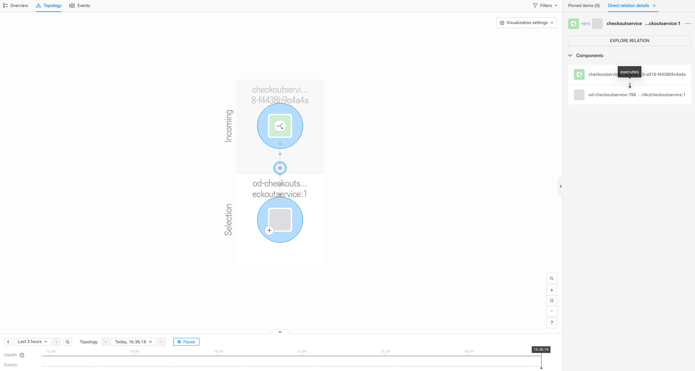

入门
概述
本文档提供了一个入门指南，用于使用作为 StackPack 一部分打包的组件和关系映射，从 OpenTelemetry (OTel) 跟踪数据构建拓扑。
本指南专注于可以立即在产品中可视化的拓扑，使用已经存在的遥测数据。 将生成的示例拓扑模型展示了服务实例如何执行一个进程，该进程源自 OpenTelemetry 资源属性。
先决条件
-
您已经收集了 OpenTelemetry 跟踪。
-
您正在创建或扩展一个 StackPack。
-
您对 YAML 和基本的 OTel 概念（资源、跨度）感到熟悉。
本指南将重点关注：
-
基于跟踪的拓扑（
TRACES信号仅） -
服务实例（而非逻辑服务）
-
运行时进程可见性
|
在本指南中，组件和关系映射以 YAML 配置的形式表达，这些配置作为 StackPack 的一部分进行打包、测试和部署。 |
配置拓扑
目标是可视化运行时执行拓扑，该拓扑可以立即使用，无需额外的用户配置。
具体来说，我们希望建模：
service instance (component) -> executes (relation) -> process (component)其中：
-
一个
service instance代表一个正在运行的仪表化服务实例。 -
一个
process代表执行该服务的操作系统进程。 -
executes关系表明服务实例由特定进程支持并在其中运行。
所有这些拓扑都是自动从 OpenTelemetry 跟踪数据中导出的。
跟踪数据
除了服务身份，跟踪资源还包括进程级属性，例如：
-
process.pid -
process.executable.name -
process.executable.path -
process.command_args -
process.runtime.name -
process.runtime.version
这些属性使我们能够在没有跨度关联或启发式的情况下建模进程级拓扑。
服务实例组件
服务实例组件已经由 OpenTelemetry StackPack 定义并提供。
每个服务实例：
-
源自
service.name、service.namespace和service.instance.id。 -
表示服务的一个具体运行实例。
-
在信号（跟踪和指标）中保持稳定。
因为这个映射已经存在，所以在本指南中不再重新定义。 相反，我们在此基础上进行构建。
从跟踪中创建进程组件
定义“进程”的含义
在本指南中，进程被定义为：
-
由
host.name、process.pid和可执行元数据标识。 -
作用于单一运行时环境。
-
仅源自 OpenTelemetry 资源属性。
这保持了拓扑的低基数，同时仍然暴露有用的运行时细节。
进程组件映射
以下组件映射为每个观察到的进程创建一个拓扑组件。
_type: "OtelComponentMapping"
name: "OTel Process"
description: "Represents an operating system process derived from OpenTelemetry"
identifier: "urn:stackpack:<stackpack-name>:shared:otel-component-mapping:process"
input:
signal:
- "TRACES"
resource:
condition: |
'host.name' in resource.attributes &&
'process.pid' in resource.attributes
action: "CREATE"
vars:
- name: "pid"
value: "${string(int(resource.attributes['process.pid']))}"
- name: "hostname"
value: "${resource.attributes['host.name']}"
- name: "executableName"
value: >-
${
'process.executable.name' in resource.attributes ?
resource.attributes['process.executable.name'] :
'process.command' in resource.attributes ?
resource.attributes['process.command'] :
'process.command_args' in resource.attributes ?
resource.attributes['process.command_args'] :
resource.attributes['process.executable.path']
}
output:
identifier: "urn:opentelemetry:process/${vars.hostname}:${vars.pid}"
name: "${vars.hostname}/${vars.executableName}:${vars.pid}"
typeName: "process"
typeIdentifier: "urn:stackpack:open-telemetry:shared:component-type:process"
required:
tags:
- source: "process-component"
target: "custom"
- source: "${resource.attributes}"
pattern: "process.(.*)"
target: "process.${1}"
expireAfter: 900000创建执行关系
现在服务实例和进程作为组件存在，我们可以将它们连接起来。
服务实例执行进程
以下关系映射从服务实例到进程创建一个`executes`关系。
此映射是从OpenTelemetry StackPack提供的现有"主机执行服务实例"关系中改编而来的。
_type: "OtelRelationMapping"
name: "Executes Relation (Service Instance -> Process)"
description: "Service instance executes a process"
identifier: "urn:stackpack:<stackpack-name>:shared:otel-relation-mapping:executes-service-instance"
input:
signal:
- "TRACES"
resource:
condition: |
'service.name' in resource.attributes &&
'host.name' in resource.attributes &&
'process.pid' in resource.attributes
action: "CREATE"
vars:
- name: "namespace"
value: "${'service.namespace' in resource.attributes && resource.attributes['service.namespace'] != '' ? resource.attributes['service.namespace'] : 'default'}"
- name: "service"
value: "${resource.attributes['service.name']}"
- name: "instanceId"
value: >-
${
'service.instance.id' in resource.attributes && resource.attributes['service.instance.id'] != '' ?
resource.attributes['service.instance.id'] :
resource.attributes['service.name']
}
- name: "hostname"
value: "${resource.attributes['host.name']}"
- name: "pid"
value: "${string(int(resource.attributes['process.pid']))}"
output:
sourceId: "urn:opentelemetry:namespace/${vars.namespace}:service/${vars.service}:serviceInstance/${vars.instanceId}"
targetId: "urn:opentelemetry:process/${vars.hostname}:${vars.pid}"
typeName: "executes"
expireAfter: 900000验证OTel映射
在将映射部署到生产环境之前，有两种选项可以验证其正确性。
-
使用`sts stackpack test-deploy`命令打包、上传并安装/升级包含映射的StackPack到运行中的SUSE® Observability实例。
-
使用`sts otel-component-mapping apply`和`sts otel-relation-mapping apply`命令分别创建/更新映射到运行中的SUSE® Observability实例。
在StackPack中一起测试映射。
假设这两个映射都在您的StackPack中，它们可以一起进行测试。有关更多信息，请参考StackPack CLI文档。
使用`sts stackpack test-deploy --yes`命令，您可以：
-
打包、上传并安装/升级StackPack。
-
验证StackPack中声明性组件和关系映射的正确性（例如，表达式的正确性，基于提供的过滤器正确引用输入信号数据）。
|
`sts stackpack test`命令不会通过映射提供示例跟踪数据。 要验证映射是否生成正确的拓扑，请确保将OpenTelemetry跟踪数据发送到SUSE Observability。 有关如何使用`sts stackpack test`的更多详细信息，请参考开发自定义集成（StackPack）。 |
单独测试映射。
假设上述组件和关系映射在YAML文件中定义，它们可以单独应用。
用您的StackPack名称替换`<stackpack-name>`（如果您还没有，使用您喜欢的任何名称，例如`mystackpack`）。
$ sts otel-component-mapping apply -f process-component-mapping.yaml
✅ OTel component mapping upserted successfully! Identifier: urn:stackpack:mystackpack:shared:otel-component-mapping:process, Name: OTel Process
$ sts otel-relation-mapping apply -f process-relation-mapping.yaml
✅ OTel Relation Mapping upserted successfully! Identifier: urn:stackpack:mystackpack:shared:otel-relation-mapping:executes-service-instance, Name: Executes Relation (Service Instance -> Process)生成的拓扑。
当这些映射应用时，生成的拓扑形成一个完全基于跟踪数据的服务-进程拓扑图。
例如，使用OTel演示应用中的`checkoutservice`，从视觉上看，拓扑应显示为：
checkoutservice (instance) ─> executes ─> checkoutservice (process)
此拓扑会随着新跟踪的到来而不断更新，并在流量停止时自动过期。
在SUSE® Observability中查看生成的拓扑。
使用SUSE® Observability UI获取可视化确认，确保映射转化为预期的拓扑。
-
在配置的`baseUrl` Helm值下打开SUSE® Observability UI。
-
在左侧边栏中，点击`Open Telemetry > Services Instances`
-
在服务实例列表中找到`checkoutservice`，点击服务实例名称以打开组件概述/亮点页面
-
在顶部的子导航栏中，选择`Topology`
-
在`Outgoing`层中，应该能看到一个`od-checkoutservice-<hostId>/checkoutservice:1 (process)`节点
-
选择进程节点，然后点击`Explore component`
-
应该能看到一个更小的可视化`checkoutservice → executes → checkoutservice (process)`拓扑
请参阅Troubleshooting指南，获取调试拓扑未按预期呈现的提示。

要查看作为进程组件映射应用结果创建的所有进程组件，请使用带有类型过滤器的`sts topology inspect`命令。
$ sts topology inspect --type process
NAME | TYPE | IDENTIFIERS
od-productcatalogservice-cf9d7b456-rlmp5/productcatalogservice:1 | process | urn:opentelemetry:process/od-productcatalogservice-cf9d7b456-rlmp5:1
od-adservice-6c9dfcfdbf-5pdqr//opt/java/openjdk/bin/java:1 | process | urn:opentelemetry:process/od-adservice-6c9dfcfdbf-5pdqr:1
od-frontend-685db864d9-6sh4d/node:17 | process | urn:opentelemetry:process/od-frontend-685db864d9-6sh4d:17
od-paymentservice-bf8f84b5d-n8k77/node:17 | process | urn:opentelemetry:process/od-paymentservice-bf8f84b5d-n8k77:17
od-quoteservice-859b8c5c4c-nkmgq/public/index.php:7 | process | urn:opentelemetry:process/od-quoteservice-859b8c5c4c-nkmgq:7
od-checkoutservice-78885bf588-59p9d/checkoutservice:1 | process | urn:opentelemetry:process/od-checkoutservice-78885bf588-59p9d:1
od-accountingservice-7c546cb977-xjp2c/accountingservice:1 | process | urn:opentelemetry:process/od-accountingservice-7c546cb977-xjp2c:1清理
要删除本指南中创建的映射，请使用以下命令：
将`<stackpack-name>`替换为您的StackPack名称。
$ sts otel-component-mapping delete --identifier urn:stackpack:<stackpack-name>:shared:otel-component-mapping:process
✅ OTel Component Mapping deleted: urn:stackpack:mystackpack:shared:otel-component-mapping:process
$ sts otel-relation-mapping delete --identifier urn:stackpack:<stackpack-name>:shared:otel-relation-mapping:executes-service-instance
✅ OTel Relation Mapping deleted: urn:stackpack:mystackpack:shared:otel-relation-mapping:executes-service-instance后续步骤
您可在此处进行下列操作：
-
将进程附加到主机或容器。
-
引入数据库或消息关系。
-
引入特定于运行时的层（JVM、Go、Node.js）。
-
探索基于指标的服务图。
-
扩展 StackPack，增加额外的拓扑层。
-
熟悉深入的组件和关系映射 reference。